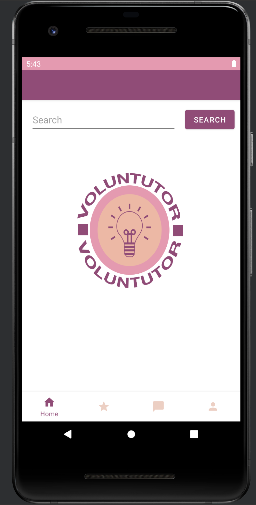
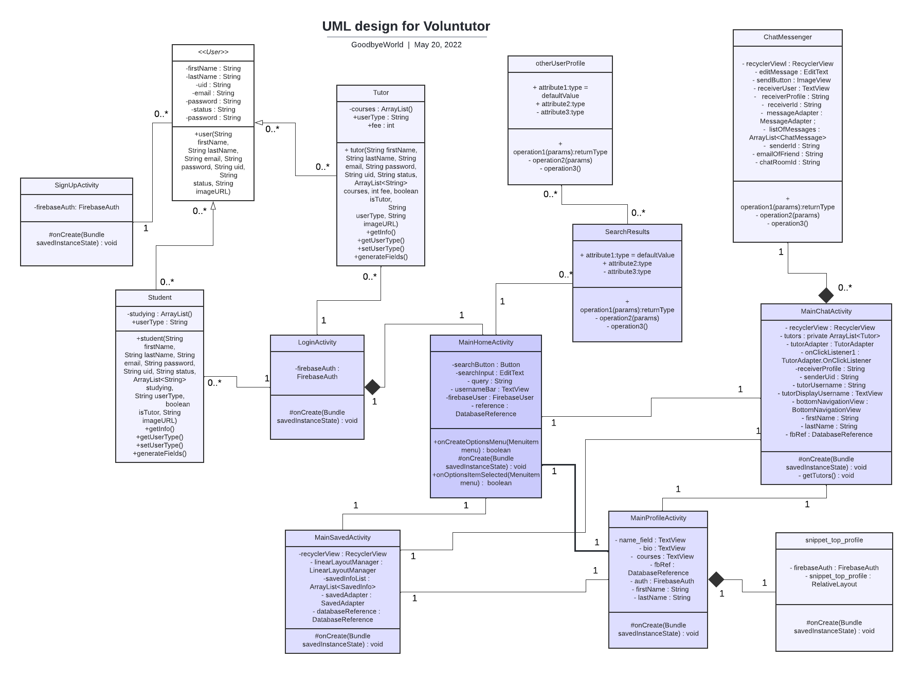

Voluntutor Android Mobile Application
| Background

The group assignment required us to create an app based on a social issue. When deciding what kind of application to create, our team unanimously
shared the desire to implement an app that was unique to the popular ones just mentioned. We concluded that popular applications which provide a
social benefit currently try to provide utility in a way that brings something new to the market. We reached the consensus that as students, we
are passionate about education. We also acknowledged our immense socioeconomic privilege and decided that increasing the accessibility to education
is a social cause we would like to address. Specifically, we wanted to address the unfair access that students of a higher socioeconomic background
have in being able to afford a private tutor for their school/coursework.
There was a clear absence of this kind of service, and though a service that provides access to rural students was found, tutoring seemed to be an
industry that was quite expensive and blatantly for-profit.
We thus created an application that acts as a "tutor finder", where tutors either cost $0 or significantly cost less than the market value.
| Goals
The objective of the project is to be able to create a functioning app that can assist students with their education. As well as connect various educators together.
The goals for the application are:
| Stakeholders
As this was course project the stakeholders are mainly internal however with consideration for potential external users.
The stakeholders for the application are:
| Activities
My main delegation was the chat function and the front end (design and app layout.) Designed and implemented 14 classes with around 1500 lines of code.
This resulted in a search function that implemented my team members' tokenizer and parser, and a working chat function that updated the Firebase database.
The chat function:
The UI/UX:
The search function:
| Outcome
The app has basic functionality and consists of various data patterns such as:
And the following data structures:
It also included:
Our apps UML can be seen below:

| Impact
Although the application was never published to the app store and is not an active application, we believe the impact would be beneficial for students looking for voluntary tutors. Free tutors would help students who aren't in the financial position to afford additional help. So ideally this app would recruit tutors who are happy to volunteer, or the app could gain revenue from ads and use partial earnings to pay tutors.